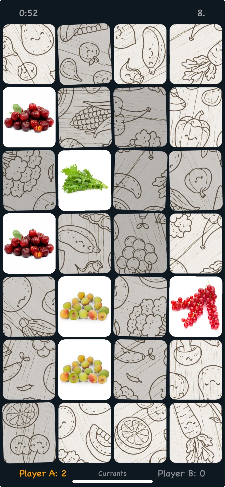

Play & discover · Beta
Memmory
Memory Booster — a picture matching game inspired by edible plants and nature.


A little memory training. A closer look at nature.
Memmory is a picture matching game that gently introduces players to edible plants and the natural world. Extra features and a range of difficulty levels make it engaging for children and adults alike.
Find the matching pictures
Explore a playful collection of nature-themed images while practising your memory. Choose a difficulty level that suits you, whether you are playing with children or looking for a challenge yourself.
Help shape the beta
Your feedback helps us polish the game before its final release. As a beta tester, you can help by:
- Trying the game on different iPhones, iPads and iOS versions.
- Reporting bugs, crashes or unexpected behaviour.
- Sharing whether the difficulty levels feel balanced for children and adults.
- Flagging unclear or incorrect text, translations and graphics.
- Giving feedback on gameplay and overall usability.
Sending feedback
Use “Send Beta Feedback” in TestFlight, or send us an email with your thoughts and suggestions. Thank you for helping us improve the game.